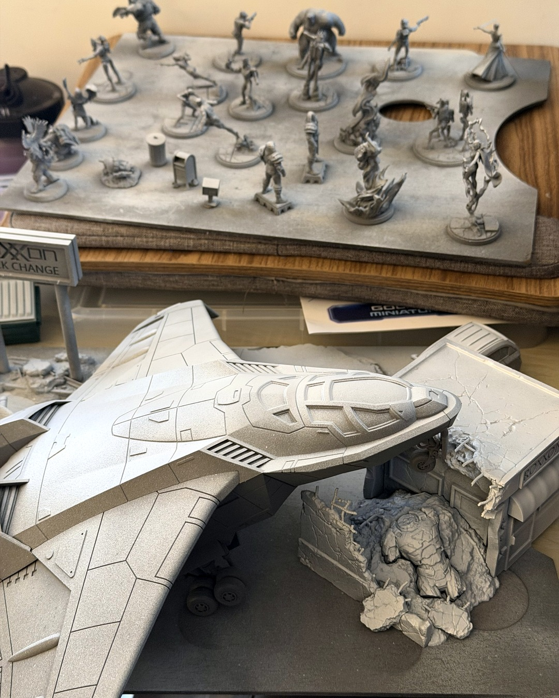

Priming backlog: cleared
Perfect humidity for rattlecan priming today, so I finally cleared the backlog. 🙌
The whole tray of Marvel: Crisis Protocol minis, plus two of the official terrain packs: the Quinjet and the Crashed Sentinel Terrain Pack. Grey primer first, then a quick pass of white from above for a zenithal. You can already see it working on the Quinjet: the top panels catch the white and the vents and undersides stay grey, so the light and shadow are mapped before any paint goes on. The clip-on trigger handle made a batch this size easy on the hand.
Everything is primed. Well, except StarCraft. StarCraft is going to be a mountain I will summit later.
Full zenithal guide is on the site, and the Quinjet, primer and trigger handle are in my gear links (link in bio). They're affiliate links, so using them supports me 🙌
@atomicmassgames
#miniaturepainting #marvelcrisisprotocol #PaintCrisisProtocol #zenithalpriming #paintingminiatures
The full guide
- Priming in batches with a rattlecan →Cheap hardware-store primer, the right color for the game, and a whole army done in one session so future you can just paint.
- Quick zenithal priming with two rattlecans →Black or grey first, then a couple of white swipes from above. Free contrast before you open a paint pot.
Gear in this post
- Rust-Oleum Painter's Touch 2X primerCheap rattlecan I prime every batch with. White, grey and black are all on the same page
- Spray can trigger handleClips onto a rattlecan so big priming batches don't cramp your hand
- Marvel: Crisis Protocol Quinjet terrainThe official Quinjet terrain pack, a big table centerpiece
Affiliate links. All gear